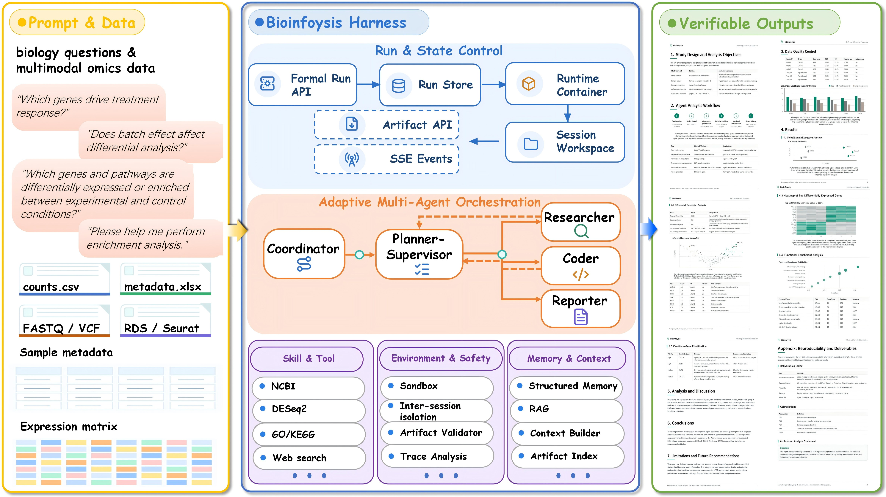
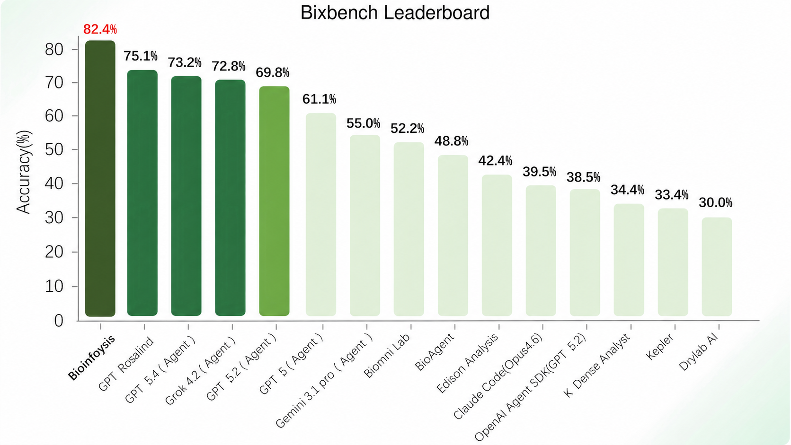
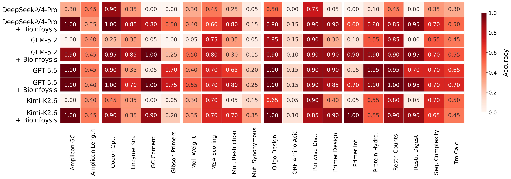

Bioinfoysis is a multi-agent harness that represents each request as a persistent, artifact-grounded analysis run. It combines global planning with step-wise, evidence-driven replanning, coordinates specialized agents through structured handoffs, and preserves every intermediate artifact, trace, and decision needed to inspect, recover, or verify an analysis. On BixBench, Bioinfoysis achieves state-of-the-art accuracy of 82.4%. Across four underlying language models on LAB-Bench2, the harness raises average accuracy from 41.65% to 69.69% on SeqQA2 and from 3.13% to 27.60% on DbQA2.
Why bioinformatics needs a governed execution harness
Modern bioinformatics analysis is long-horizon by nature: a single request can require data inspection, tool selection, statistical modeling, code execution, and interpretation across many dependent steps. General-purpose language models can reason about individual steps, but they struggle to keep a multi-hour analysis coherent — intermediate results are lost, workflows drift, and outputs become impossible to verify.
Bioinfoysis addresses this with a governed execution harness. The system treats each analysis as a first-class, persistent run, and its quality is judged not only by the final answer, but by whether the path to that answer can be executed, inspected, recovered, and verified. Five capabilities define the design:
- Coordinated multi-agent analysis — specialized roles for planning, research, coding, and reporting, coordinated through structured handoffs.
- Evidence-grounded, skill-governed execution — claims must be backed by executed code and validated artifacts; bioinformatics skills encode domain-correct procedures.
- Role-specific context and persistent memory — each agent sees a tailored, budget-aware view of the run, with evidence-backed memory across runs.
- Structured handoffs and artifact continuity — results carry their provenance, artifacts, and uncertainty forward.
- Trace-based audit and evaluation — every call, tool use, and failure is recorded for audit and recovery.
Three layers, five roles
The system is organized into three layers: an orchestration layer that maintains an adaptive plan and checklist; a scientific capability and execution layer providing tools, governed skills, isolated code execution, and artifact validation; and an observability layer that records traces, analytics, and audit records.

Adaptive planning
Unlike fixed plan-then-execute pipelines, Bioinfoysis replans step-wise. The planner issues a global plan, then revises the remaining checklist as intermediate results arrive — a failed statistical test, an unexpected data shape, or a contradictory finding can all trigger a bounded, evidence-driven replan rather than a blind continuation.
Governed skills and tools
Domain correctness is encoded as skills: reusable, versioned procedures (differential expression, enrichment, variant calling, QC) that specify applicable inputs, assumptions, and expected artifacts. Skills constrain the coder to scientifically defensible workflows instead of ad-hoc script generation.
Persistent runs and artifact-grounded execution
Persistent runs and controlled execution
Each analysis is stored as a persistent run with a stable identifier, registered inputs, workflow state, an ordered event history, and an artifact index. Runs execute in run-specific workspaces with serialized state-changing operations, so concurrent analyses cannot overwrite one another, and interrupted runs resume from a valid checkpoint under the same identifier.
Role-specific context and persistent memory
The full conversation is never dumped into every prompt. Each role receives a tailored view — the planner sees the task and checklist, the coder sees the active step and relevant inputs, the reporter sees validated results. Large tool outputs are stored outside the prompt behind stable identifiers, and only evidence-backed facts from completed runs are promoted to persistent memory.
Artifact-grounded execution
Generated outputs are managed as run artifacts, not paths mentioned in a response. Reported scripts, tables, and figures are resolved inside the permitted workspace, checked for existence, and validated against the requested output. Before completion, public artifacts are frozen and indexed with content hashes; if a required deliverable cannot be published, the run is not reported as successful.
Trace, audit, and recovery
A sanitized public event stream serves users, while an internal trace records agent calls, tool use, retrieval, and failures. Recovery is checkpoint-based: publication and memory updates are protected from double-application, and cancellation stops at safe workflow boundaries, leaving runs resumable.
State of the art on BixBench, consistent gains on LAB-Bench2
We evaluate on a complementary benchmark suite: BixBench, 61 real-world analysis capsules yielding 205 open-ended questions across ~20 domains, measuring end-to-end executable analysis; and LAB-Bench2, where we focus on SeqQA2 (400 questions) and DbQA2 (86 questions), measuring sequence-analysis reasoning and database retrieval.
BixBench: 82.4% accuracy, first place
With Kimi-K2.6 as the underlying agent model, Bioinfoysis answers 169 of 205 questions correctly, outperforming the second-ranked GPT Rosalind by 7.3 percentage points and exceeding GPT-5.4 Agent and Grok-4.2 Agent by 9.2 and 9.6 points. Against bioinformatics-oriented systems, it improves over Biomni Lab and BioAgent by 30.2 and 33.6 points. Because bioinformatics conventions can change conclusions, our evaluation additionally audits code-execution correctness, artifact generation, and traceability — see the full report for the benchmark audit protocol.

| Domain | Capsules | Correct | Questions | Accuracy |
|---|---|---|---|---|
| Functional Genomics & Pathway Enrichment | 9 | 22 | 31 | 70.97% |
| Genomic Variant Analysis | 7 | 14 | 16 | 87.50% |
| Transcriptomics & Differential Expression | 10 | 30 | 42 | 71.43% |
| Phylogenetics & Comparative Genomics | 15 | 45 | 51 | 88.24% |
| Epigenomics | 2 | 9 | 12 | 75.00% |
| Clinical Research & Biostatistics | 3 | 16 | 18 | 88.89% |
| Bioimaging & Quantitative Phenotyping | 4 | 21 | 21 | 100.00% |
| Single-Cell Transcriptomics | 1 | 2 | 2 | 100.00% |
| Proteomics | 1 | 4 | 4 | 100.00% |
| Multi-Omics Integration & Machine Learning | 1 | 2 | 2 | 100.00% |
| Microbial Genomics & Antimicrobial Resistance | 1 | 4 | 6 | 66.67% |
| Overall | 54 | 169 | 205 | 82.44% |
LAB-Bench2: large, consistent gains across four models
On SeqQA2, Bioinfoysis improves every evaluated model, with gains of 30.50, 36.89, and 34.50 points for Kimi-K2.6, DeepSeek, and GLM. Many sequence-analysis questions can be converted into deterministic operations, and the harness decomposes them into explicit, executable steps. DbQA2 is far harder for direct inference — base models average just 3.13% — while Bioinfoysis reaches 27.60% on average by completing the full retrieve–process–answer workflow.
| Benchmark | System | Kimi-K2.6 | GPT-5.5 | DeepSeek | GLM-5.2 | Average |
|---|---|---|---|---|---|---|
| SeqQA2 (400 q) | Bioinfoysis | 66.00% | 75.00% | 68.50% | 69.25% | 69.69% |
| Base model | 35.50% | 64.75% | 31.61% | 34.75% | 41.65% | |
| DbQA2 (86 q) | Bioinfoysis | 30.20% | 37.20% | 22.10% | 20.90% | 27.60% |
| Base model | 1.60% | 7.80% | 3.10% | 0.00% | 3.13% |

Ablations: memory and skills dominate
On all 205 BixBench questions with GPT-5.4, removing persistent memory costs 22.44 points and removing bioinformatics skills costs 19.02 points — the two largest contributors. ReAct-style planning contributes 6.83 points, and removing the entire skill catalog drops accuracy to 42.44%. The harness also transfers across models, holding 77–82% accuracy with Kimi-K2.6, GPT-5.4, and DeepSeek-V4-Pro.
| Configuration | Agent model | Skills | Accuracy | Correct | Δ Acc. |
|---|---|---|---|---|---|
| Bioinfoysis (full) | Kimi-K2.6 | 78 | 82.44% | 169/205 | +3.41 |
| Bioinfoysis (full) | GPT-5.4 | 78 | 79.02% | 162/205 | 0.00 |
| Bioinfoysis (full) | DeepSeek-V4-Pro | 78 | 77.07% | 158/205 | −1.95 |
| w/o ReAct-style planning | GPT-5.4 | 78 | 72.20% | 148/205 | −6.83 |
| w/o memory | GPT-5.4 | 78 | 56.59% | 116/205 | −22.44 |
| w/o bioinformatics skills | GPT-5.4 | 30 | 60.00% | 123/205 | −19.02 |
| w/o all skills | GPT-5.4 | 0 | 42.44% | 87/205 | −36.59 |
See Bioinfoysis in action
An end-to-end analysis run: from a natural-language request to a verified, artifact-grounded report.
Citing Bioinfoysis
If Bioinfoysis helps your research, please cite the report:
@article{shao2026bioinfoysis,
title = {Bioinfoysis: A Multi-Agent Framework for Long-Horizon
Bioinformatics Analysis},
author = {Shao, Qingyang and Zhang, Xin and Yuan, Zhouyang and
Chen, Xianying and others},
journal = {arXiv preprint},
year = {2026}
}